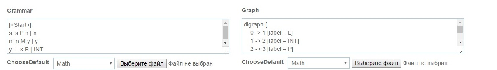
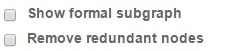
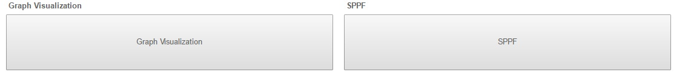
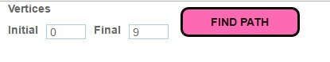
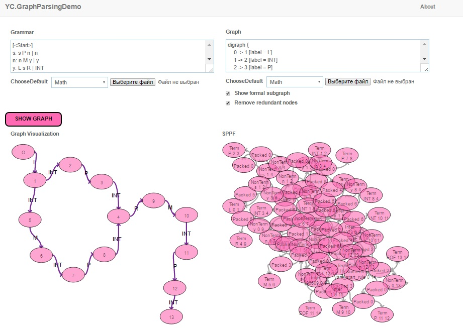
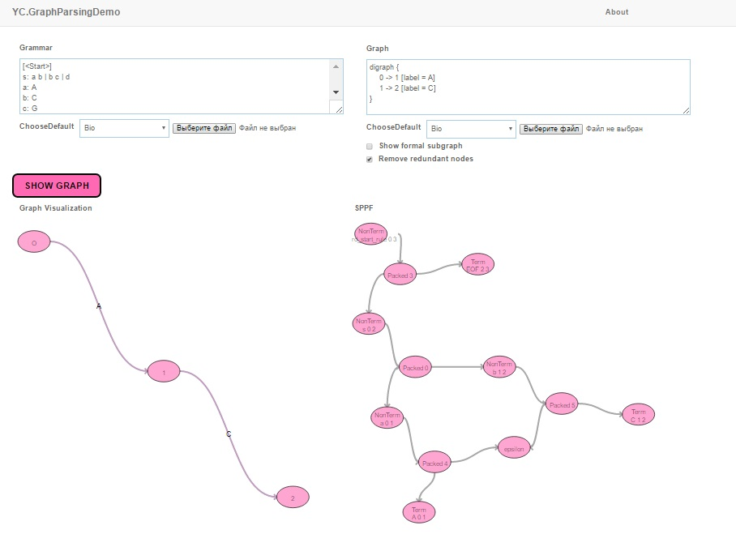
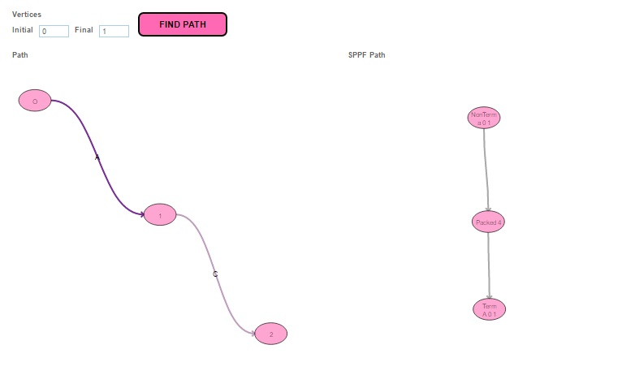
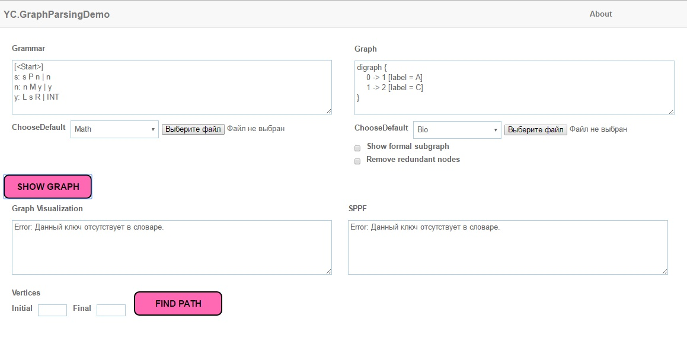

YC.GraphParsingDemo
Documentation
YC.GraphParsingDemo is web application for parsing and visualizing graphs and SPPFs (Shared Packed Parse Forests).
This app can also visuailze formal subgraphs, filter out redundant nodes from SPPF and search for minimal length path betweeen two specified vertices of the input graph.
Tutorial
Start
To start YCGraphParsingDemo application you need to type in grammar and graph and press "SHOW GRAPH" button.

You can also upload files from your device.
If you want to show formal subgraph of input graph and/or remove redundant nodes from SPPF, use checkboxes under the graph input form.

When you press "SHOW GRAPH" button, two new buttons will appear:

To see graph or SPPF visualizations press their respective buttons.
To extract minimal length path between two specific vertices of the input graph write their numbers in special form and press "FIND PATH".

After that you will see two other visualization controls as you did in previous step.
Note that unchecking one of the checkboxes, clicking on "SHOW GRAPH" the second time or changing text in the input forms will reset visualization.
Clicking on one of visualisation windows will refresh it and allow you to change the graph layout.
Using examples
- Example 1 
- Example 2 
- Example 2 (part 2) 
- Example 3 